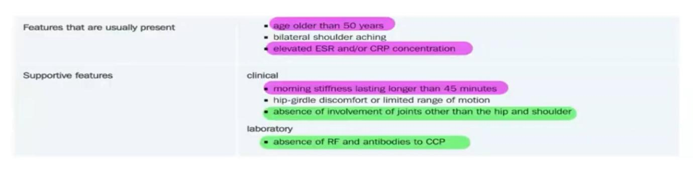

Body Aches (Fibromyalgia)
Stem
Your next patient is a 50 year old lady who has presented to your General Practice complaining of wide spread aches and pain.
ESR and CRP are normal.
Task:
- Take history for 6 minutes
- Physical examination will appear on the screen at 6 minutes
- Explain diagnosis and differentials to the patient
Differential Diagnosis of Widespread Body Aches
Before diagnosing fibromyalgia, you must rule out all other causes.
A. Arthritis Group
- Osteoarthritis
- Rheumatoid arthritis
- Psoriatic arthritis
- Reactive arthritis
(All can involve multiple joints)
B. Polymyalgia Rheumatica
- Upper and lower limb pain
- Patient may say “pain all over my body”
C. Systemic Lupus Erythematosus (SLE)
D. Endocrine
- Hypothyroidism
- Hyperparathyroidism → hypercalcemia → body pains
E. Drug-related
- Statin-induced myopathy
F. Infections
- Hepatitis
- Travel-related infections (e.g. chikungunya)
- Post-COVID syndrome
G. Neurological
- Multiple sclerosis
H. Psychological
- Somatic symptom disorder
I. Malignancy
- Leukemia
- Lymphoma (bone pain)
What Is Fibromyalgia?
- Most common cause of chronic widespread musculoskeletal pain
- Controversial condition:
- Patient looks well
- No abnormalities
- PE normal other than widespread tissue tenderness v
- Lab & Pathological & Radiological studies normal
Examination
- No deformity
- No swelling
- No joint abnormality
- Only tender points in muscles
Investigations
- ESR, CRP – normal
- X-ray, MRI – normal
Nature of disease
- No structural or anatomical damage
- Previously considered psychosomatic
- Now classified as pain regulation disorder
“It is not a psychological disorder, although there is a big overlap.”
Clinical Features of Fibromyalgia
Core Features
- Widespread pain
- Multiple sites
Tender Points
- Previously counted
- Now: We no longer do a formal tender-point count. As long as it’s widespread, that’s enough.
Other Features
- Tiredness
- Sleep disturbance
- Sometimes stiffness: creates difficulty to R/O RA or PMR
- Psychogenic features
- Cognitive clouding (“fibro fog”)
- Even Gl and urogenital dysfunction (IBS - irritable bladder)
6. Diagnosis of Fibromyalgia
- Least 3months duration
- Diagnosis is symptom based
- Widespread pain: Multi sites
- Moderate or severe problems with sleep and fatigue
- R/O other conditions!
- There are no confirmatory tests or biomarkers
History Taking Structure
Opening
Open-ended question
Example dialogue:
“I have pain all over my body. I’ve been to multiple doctors. They keep telling me it’s nothing. I’m frustrated and annoyed.”
Doctor:
“I understand how frustrating that can be. Let me ask you a few questions, examine you, and try to find the cause.”
8. Pain History – SIQORAA
Site
- Is it joints or muscles?
- Ask her to nominate painful areas> can u tell me the few points that are painful
Intensity 1-10
Quality of pain
Onset
- How long?
- Constant or on and off?
- Is it getting worse
Radiation
Alleviating / Aggravating
Affect
- Effect on home life
- Effect on work
Pattern
- Do u have pain at Night?
- Worse in Morning or end of day?
- Same all day?
- Worse with rest or activity?
9. Fibromyalgia-Specific Questions
- Tiredness
- Sleep quality?
- Difficulty falling asleep?
- Waking up at the middle of the night?
- Difficulty falling asleep?
- Concentration problems?
10. Differential-Based History
A. Arthritis
Osteoarthritis
- Occupation
- Repetitive movements
- Heavy lifting
Rheumatoid Arthritis
- Joint swelling
- Redness
- Stiffness
- Family history
B. Psoriatic / Dermatomyositis
- Rashes
C. Reactive Arthritis
- Diarrhea
- Blood in stools
- Vaginal discharge
- Sexual history
- STIs
D. Gout
- Triggered by red meat or alcohol
E. Ankylosing Spondylitis
- Back stiffness, bending problems
F. Polymyalgia Rheumatica
- Shoulder pain
- Hip pain
- Headache
- Blurring of vision
- (Temporal arteritis)
G. SLE
- Rashes on cheeks
- Any changes in the amount and colour of your urine
- Raynaud phenomenon: any colour change in fingers when exposed to cold environment
Joint pain and tiredness already asked
H. Hypothyroidism
- Weather preference: Cold intolerance
- Constipation
- Dry skin
I. Hyperparathyroidism / Hypercalcemia
- Thirst
- Nausea
- Vomiting
- Abdominal pain
J. Infections
- Fever
- Chills
- Flu-like illness
- Travel history
K. Multiple Sclerosis
- Any Weakness or Numbness in the body?
- Visual problems
L. Malignancy
- Weight loss
- Appetite change
- Lumps
- Night sweats
M. Somatic Symptom Disorder (Mini Psychiatry)
- Mood
- Sleep
- Appetite
- Suicidal thoughts
Example:
“Have you ever thought about harming yourself or anyone else?”
Mini HEADSS
- Home: who do you live with? How is your relationship with them? Do you have good support from your partner?
- Employment / education: can you tell me what you do? Any stressors at work?
N. Medications
- Especially statins: do you take any medication, especially for lowering fat and cholesterol?
O. SADMA
- Smoking
- Alcohol
- Drugs
- Medications
- Allergies
- Past history
- Family history
History Findings
- Pain all over body
- Back, neck, chest
- Morning stiffness
- Tiredness
- Able to move neck and back
- No red-flag features
Physical Examination
- Tender points
- e.g. trapezius muscle and other tender points
- e.g. trapezius muscle and other tender points
- No joint swelling
- No redness
- No arthritis
13. Diagnosis Explanation
“Most likely you have fibromyalgia.”
Explain to Patient
- In this condition,You have widespread pain in multiple points of your body. The pain is real but There is no damage to joints, muscles, or organs means No structural problem.
“I understand how frustrating this is. This is the most likely cause and we’ll work together to manage it.”
14. Differentials to Explain
- I was thinking about inflammation of blood tubes like Polymyalgia rheumatica
- Rheumatoid arthritis
- Psoriatic arthritis
- Gout
- Reactive arthritis
- SLE
- Hypothyroidism
- Hyperparathyroidism
- Statin myopathy
- Infections (COVID, hepatitis, travel-related)
- Malignancy (leukemia, lymphoma)
- Dermatomyositis / polymyositis
- Multiple sclerosis
- Somatic symptom disorder
15. Investigations
(To rule out differentials)
- ESR
- CRP
- Rheumatoid factor
- Anti-CCP
- ANA
- TSH
- CK
- X-ray (if site specific)
16. Management of Fibromyalgia
Non-pharmacological
- Graded aerobic exercise
- CBT
- Sleep hygiene
- Lifestyle modification
Pharmacological
- TCA – Amitriptyline (first line)
Referral
- Pain clinic
Key Counseling Point
“The goal is not to make you pain-free, but to help you function better.”
Your next patient is a 72 year old man who has presented to your General Practice complaining of pains and aches.
Task:
- Take history for 6 minutes
- Explain diagnosis and differentials to the patient
History findings
- Shoulder pain and hip pain
- Worse in the morning
- Stiffness in the morning
- Tired
- Also loss of weight
Diagnosis
Polymyalgia rheumatica
Whenever we have case of PMR, it is essential to ask about temporal arthritis (both are giant cell arteritis just happening at the different parts)
Don’t forget to ask
- Headache
- Blurring of vision
- Tender chord at the side of your head

“Most likely you have a condition called PMR, this is an auto immune condition that immune system damages or attack the blood tubes in your shoulders and hip and this causes body aches, stiffness and other things that you are having”
List out DDX.